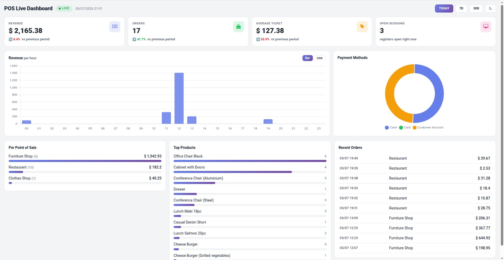
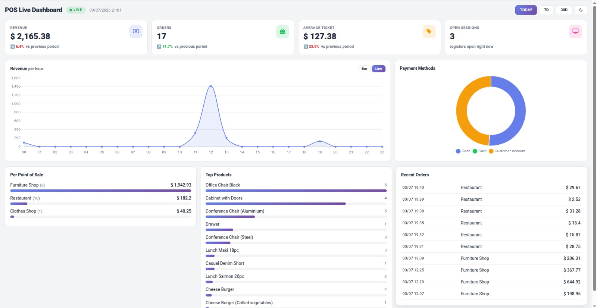
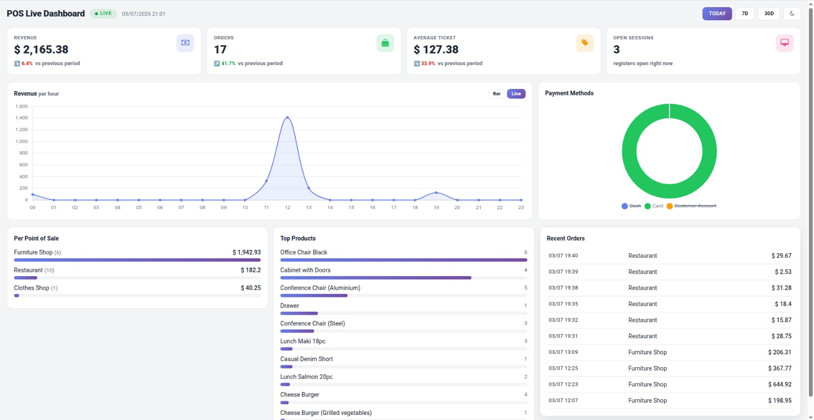
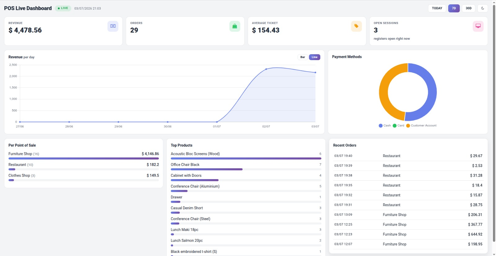
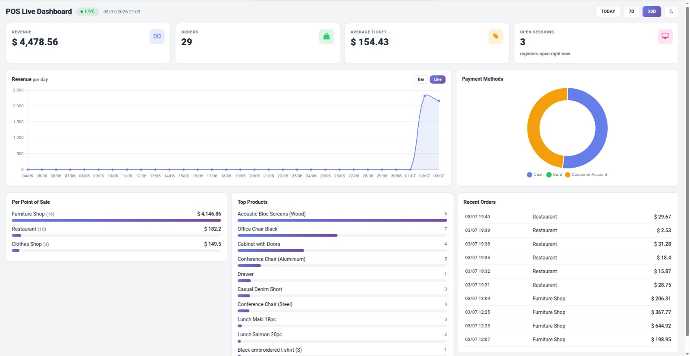
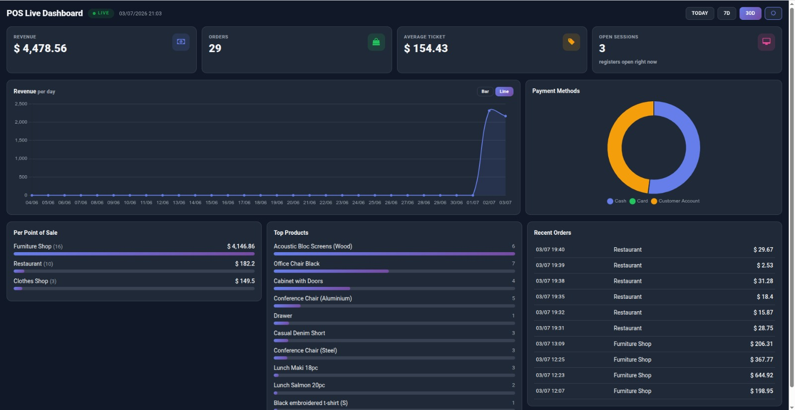

Every paid order pushes an update to the dashboard instantly. No polling, no manual refresh.
Revenue and order count per point of sale, side by side. Perfect for multi-branch owners.
Revenue, orders, average ticket, open sessions, hourly chart, top products and payment methods.

Today at a glance. The hourly bar chart shows exactly when the day peaked. KPI cards carry the trend versus the previous period, and the doughnut splits revenue by payment method.

One click flips the revenue chart between Bar and Line. The line view makes the lunch-rush curve obvious.

The payment doughnut is interactive. Click a legend entry to isolate a single method, here only Card is kept, so you can read one channel on its own.

Switch to the 7D filter and every number, chart and table recomputes for the last seven days, revenue now plotted per day.

The 30D filter zooms out to a full month, so you can see the whole trend line at once.

Prefer a dark office screen? Toggle dark mode from the top bar. The charts re-theme themselves and the choice is remembered.
The hourly chart shows when the day peaks, so staffing decisions are based on numbers.
Six shops, one table. See instantly which point of sale carries the day and which lags.
Read-only dashboard, no new tables, no configuration. Managers only, enforced by access group.